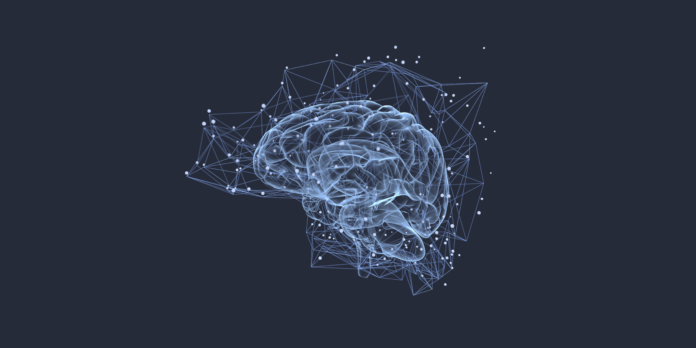

EEGNet model predicting sleep deprivation states from resting-state EEG • ~96% accuracy

This project uses the Sleep Deprivation EEG dataset to classify resting-state EEG epochs. The model is trained at the epoch level, aggregating EEG data from all subjects. It can distinguish EEG patterns between normal sleep and sleep-deprived sessions with high accuracy (~96%).
The dataset includes:
EEGNet_Epoch_Level/
│
├── data/ # Raw EEG .set/.fdt files (not included)
├── saved_models/
│ └── eegnet_sleep_deperivation_model.keras
├── notebooks/
│ └── deeepl_eegnet_epoch.ipynb
└── README.md
# Run the notebook to train and evaluate EEGNet
jupyter notebook notebooks/deeepl_eegnet_epoch.ipynb
# Load pretrained model for prediction:
from tensorflow.keras.models import load_model
model = load_model('models/eegnet_sleep_deperivation_model.keras')
# Predict on new EEG epochs:
preds = model.predict(X_new)